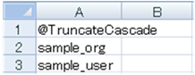
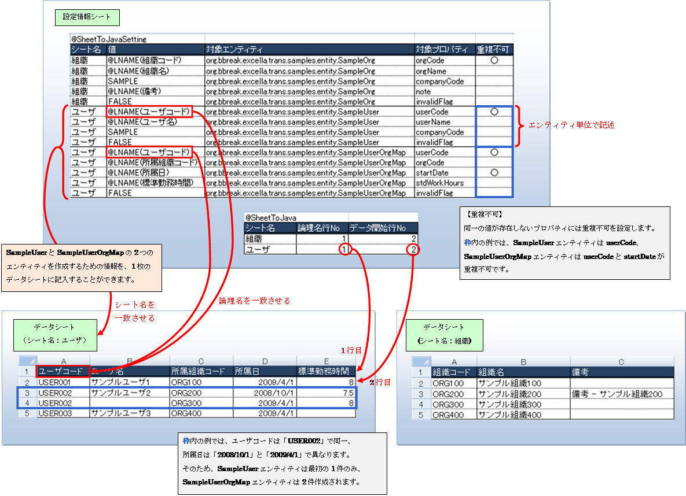
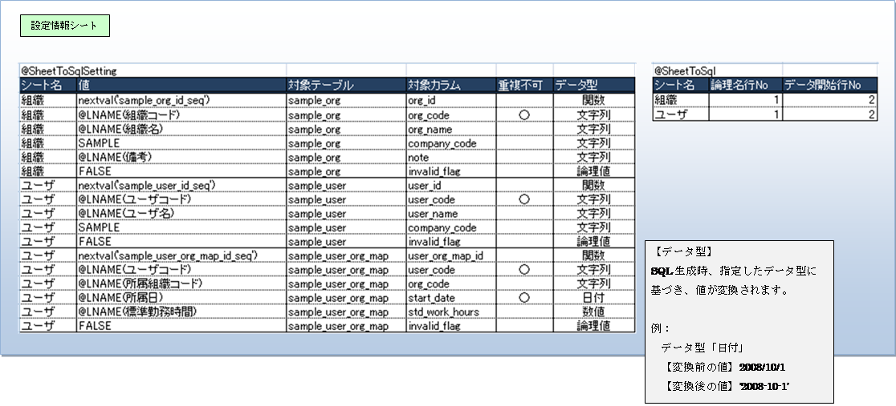
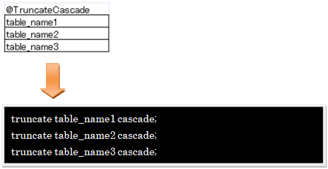
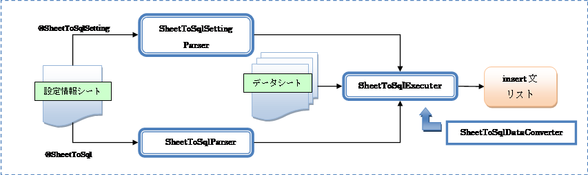

ExCella Transリファレンスガイド
5.3. カスタムTransProcessListenerの使用
5.3.1. カスタムTransProcessListenerの作成
5.3.2. カスタムTransProcessListenerの追加
5.4. カスタムSheetToJavaPropertyParserの使用
5.4.2. カスタムSheetToJavaPropertyParserの作成
5.4.3. カスタムSheetToJavaPropertyParserの追加
5.5.1. DefaultSheetToSqlDataConverter仕様
ExCella TransはExCella Core(http://sourceforge.jp/projects/excella-core/)を利用したデータ移行支援ツールです。
ExCella Transを利用することで、Excelで定義したデータからSQL やO/Rマッピングツール（以降、ORMツール）で
利用可能なエンティティを作成することができます。
本ソフトウェアはLGPL v3にて公開しています。
データ移行といっても様々な方法があり、方法によって利用するツールの選択肢も変わってきます。
RDBMS⇒RDBMSのデータ移行のアプローチは大きく下記の3種類に分類できます。
� 旧RDBMSに存在しないデータを新規に作成して投入する。
� RDBMSからデータをエクスポートし、人がクリーニングしたデータを投入する
� RDBMSからRDBMSへ移行プログラムで変換した結果を投入する
実際は上記のどれか１つのパターンで完結するケースは少なく、マスタデータは� or �、トランザクションデータは�といったように
データによってこれらのパターンを組み合わせて行うケースが殆どです。
ExCella TransはExcelによる移行データの作成/編集を伴う(� or �のケースを含む)データ移行に適しています。
サンプルに沿って、ExCella Transの利用方法を紹介していきます。
ExCella Transを利用したRDBMSテーブルのデータ削除、シーケンス初期化、データ挿入のサンプルです。
※ ここで紹介するプログラムおよびExcelデータはサンプル(org.bbreak.excella.trans.samples)に含まれています。
本サンプルでは、組織・ユーザ・ユーザ組織マップの3つの既存テーブルに対し、
以下の処理を行うためのデータを作成します。
Ø データ削除 … truncate 〜 cascade文の作成
Ø シーケンス初期化 … create sequence / drop sequence文の作成
Ø データ挿入 … insert文およびORMツールで利用可能なエンティティの作成
|
※ サンプルではデータ作成後、それぞれの値をコンソールに出力し、処理を終了します。 実際には、SQLの実行処理やORMツールによるオブジェクトの永続化処理を行い、データ移行を実現します。 |
l データベーススキーマ
【ER図】
【テーブル定義】
|
テーブル名 |
テーブル名（日本語） ・ 説明 |
列名 |
列名（日本語） |
データ型 |
サイズ |
初期値 |
必須 |
備考 |
|
sample_org |
サンプル組織 |
org_id |
組織ID |
bigint |
|
|
○ |
PK |
|
org_code |
組織コード |
varchar |
30 |
|
○ |
UK |
||
|
org_name |
組織名 |
varchar |
200 |
|
○ |
|
||
|
company_code |
会社コード |
varchar |
30 |
|
○ |
|
||
|
note |
備考 |
varchar |
|
|
|
|
||
|
invalid_flag |
無効フラグ |
boolean |
|
FALSE |
|
|
||
|
sample_user |
サンプルユーザ |
user_id |
ユーザID |
bigint |
|
|
○ |
PK |
|
user_code |
ユーザコード |
varchar |
30 |
|
○ |
UK |
||
|
user_name |
ユーザ名 |
varchar |
200 |
|
○ |
|
||
|
company_code |
会社コード |
varchar |
30 |
|
○ |
|
||
|
invalid_flag |
無効フラグ |
boolean |
|
FALSE |
○ |
|
||
|
sample_user_org_map |
サンプルユーザ組織マップ |
user_org_map_id |
ユーザ組織マップID |
bigint |
|
|
○ |
PK |
|
user_code |
ユーザコード |
varchar |
30 |
|
○ |
UK, FK (sample_user.user_code) |
||
|
org_code |
所属組織コード |
varchar |
30 |
|
○ |
FK (sample_org.org_code) |
||
|
start_date |
所属日 |
date |
|
|
○ |
UK |
||
|
std_work_hours |
標準勤務時間 |
numeric |
5, 2 |
|
|
|
||
|
invalid_flag |
無効フラグ |
boolean |
|
FALSE |
○ |
|
|
シーケンス名 |
備考 |
|
sample_org_id_seq |
組織IDのシーケンス |
|
sample_user_id_seq |
ユーザIDのシーケンス |
|
sample_user_org_map_seq |
ユーザ組織マップIDのシーケンス |
まずはExCella Transで読み込むExcelファイルを作成していきます。
Excelシート中に”@”で始まるタグを埋め込み、ExCella Transがデータを読み取れるようにします。
データ削除を実現するため、Excelシート中にtruncate 〜 cascade文を作成するタグを埋め込みます。
@TruncateCascadeタグを使用すると、truncate 〜 cascade文を作成することができます。
下図のようにExcelファイルにタグ(@TruncateCascade)と対象テーブル名を埋め込みます。

プログラムを実行すると、以下のSQLが作成されます。
Ø 参考
他にも以下のようなタグがあります。
Ø @Truncate … truncate文を作成するタグ
Ø @Delete … delete文を作成するタグ
シーケンス初期化を実現するため、Excelシート中にdrop sequence / create sequence文を作成するタグを埋め込みます。
@RecreateSequenceタグを使用すると、drop sequence / create sequence文を作成することができます。
下図のようにExcelファイルにタグ(@RecreateSequence)と対象シーケンス名・初期値を埋め込みます。
タグの{ }内にタグパラメータを指定することにより、データ解析の動作を制御することができます。
タグパラメータの一覧は、4. 標準パーサ仕様に記載されています。
プログラムを実行すると、以下のSQLが作成されます。
※Ver1.1でOracleに対応しました。
RDBMSテーブルにデータを挿入する代表的なアプローチとして、ORMツールの利用とSQLの実行があります。
以下では、その両方のアプローチに対応できるよう、ORMツールで利用できるエンティティおよびSQLを作成する方法を紹介します。
ORMツールで利用可能なエンティティを作成するタグを紹介します。
エンティティ作成には以下の二通りのタグを使用する方法があります。
l @Objectsタグ
l @SheetToJavaSetting / @SheetToJavaタグ
@Objectsタグを使用すると、エンティティを作成することができます。
1つのタグ定義で1つのエンティティを作成することができるのが特徴です。
一方で、サンプルのように関連のある複数のテーブルのデータを作成する際には、
スキーマを意識しなければならないという側面があります。
下図のようにExcelファイルにタグ(@Objects)、クラスとプロパティの情報を埋め込みます。
タグパラメータには対象エンティティクラスのパスを指定します。
l 組織エンティティ
l ユーザエンティティ
l ユーザ組織マップエンティティ
プログラムを実行すると、以下の3つのエンティティが作成されます。
@SheetToJavaSettingタグと@SheetToJavaタグを使用すると、エンティティを作成することができます。
前出の@Objectsタグに比べて、スキーマを意識せずにデータ作成が可能です。
以下のように、Excelファイルに設定情報シートとデータシートを作成します。
Ø 設定情報シート
@SheetToJavaSettingタグと@SheetToJavaタグを記述するシートです。
・@SheetToJavaSettingタグ… エンティティを作成するために必要な骨組みを定義します。
・@SheetToJavaタグ … 参照するデータシートの情報を定義します。
Ø データシート
エンティティにセットするプロパティの値を記述するシートです。
データシートのデータを参照するためには、設定情報シートの@SheetToJavaSettingタグの値欄に
論理名タグを意味する「@LNAME」タグを記述する必要があります。

@SheetToJavaSettingタグ以下に記述する情報
|
シート名 |
データシートの名称。 シート名セルがnullまたは空文字の場合は、対象行の処理を飛ばす。 |
|
値 |
エンティティのプロパティにセットする値。 「@LNAME(≪論理名≫)」と記述すると データシートの論理名と一致する列のデータが使用される。 カスタムタグを記述して任意の処理を行うことも可能 |
|
対象エンティティ |
対象エンティティクラスのパス。≪必須≫ |
|
対象プロパティ |
エンティティのプロパティ。 値にカスタムタグを使用していない場合、≪必須≫ |
|
重複不可 |
プロパティの取り得る値が重複しない（ユニークな）場合は 「○」と記述する。重複不可プロパティの値が重複する複数のデータが定義された場合、最初の1件のエンティティのみが作成される。 |
＠SheetToJavaタグ以下に記述する情報
|
シート名 |
データシートの名称。 シート名セルがnullまたは空文字の場合は、対象行の処理を飛ばす。 |
|
論理名行No |
データシートの何行目を論理名行とみなすか。≪必須≫ Excelシートの行番号で記述する。 |
|
データ開始行 |
データシートの何行目をデータ行とみなすか。≪必須≫ Excelシートの行番号で記述する。 |
プログラムを実行すると、データシートに記述されたデータを1件ずつ、
設定情報シートのデータを基に、以下の3つのエンティティが作成されます。
insert文を作成するタグを紹介します。
@SheetToSqlSetting / @SheetToSqlタグを埋め込むと、insert文を作成することができます。
基本的な使い方は@SheetToJavaSetting / @SheetToJavaタグと同様です。
以下のように、Excelファイルに設定情報シートを作成します。
なお、データシートは@SheetToJavaSetting / @SheetToJavaタグの例で利用したデータシートを共用します。
Ø 設定情報シート
@SheetToSqlSettingタグと@SheetToSqlタグを記述するシートです。
・@SheetToSqlSettingタグ… insert文を作成するために必要な骨組みを定義します。
・@SheetToSqlタグ … 参照するデータシートの情報を定義します。
Ø データシート
insert文のvaluesにセットする値を記述するシートです。
データシートのデータを参照するためには、設定情報シートの@SheetToSqlSettingタグの値欄に
論理名タグを意味する「@LNAME」タグを記述する必要があります。

@SheetToSqlSettingタグ以下に記述する情報
|
シート名 |
データシートの名称。 シート名セルがnullまたは空文字の場合は、対象行の処理を飛ばす。 |
|
値 |
insert文のvaluesに設定する値。 「@LNAME(≪論理名≫)」と記述すると データシートの論理名と一致する列のデータが使用される。 |
|
対象テーブル |
insert文の対象テーブル。≪必須≫ |
|
対象カラム |
insert文の対象カラム。≪必須≫ |
|
重複不可 |
カラムがユニークキーかどうか。 ユニークキーの場合は「○」と記述する。 ユニークキーの値が重複する複数のデータが定義された場合、 最初の1件のinsert文のみが作成される。 |
|
データ型 |
カラムのデータ型を以下から選択する。≪必須≫ SQL生成時、選択したデータ型に基づき、値が変換される。 ・文字列 ・数値 ・整数 ・論理値 ・日付 ・時間 ・タイムスタンプ ・関数 |
＠SheetToSqlタグ以下に記述する情報
|
シート名 |
データシートの名称。 シート名セルがnullまたは空文字の場合は、対象行の処理を飛ばす。 |
|
論理名行No |
データシートの何行目を論理名行とみなすか。≪必須≫ Excelシートの行番号で記述する。 |
|
データ開始行 |
データシートの何行目をデータ行とみなすか。≪必須≫ Excelシートの行番号で記述する。 |
プログラムを実行すると、データシートに記述されたデータを1件ずつ、
設定情報シートのデータを基に、以下のSQLが作成されます。
作成したExcelファイルを読み込み、エンティティやSQLを作成するプログラムを実行します。
下記のように、引数にExcelファイルのパスを指定したコンストラクタを呼び出し、プロセッサを生成します。
|
// プロセッサ生成 TransProcessor processor = new TransProcessor( ≪ファイルパス≫); |
プロセッサからprocessBoookメソッドを呼び出すと、ブック単位のプロセスを実行します。
|
// ブック単位のプロセス実行 BookData bookData = processor.processBook(); |
引数にシート名を指定したprocessSheetメソッドを呼び出すと、シート単位のプロセスを実行します。
|
// シート単位のプロセス実行 SheetData sheetData = processor.processSheet( ≪シート名≫); |
作成したエンティティやSQLのリストはSheetDataからタグ名を指定することにより
タグ単位で取得することができます。以下のサンプルコードはプロセス結果利用の一例です。
赤字部分にはそれぞれ、SQLの実行処理とORMツールによるエンティティの処理を記述します。
|
// プロセス実行 BookData bookData = processor.processBook(); // シート名リストの取得 List<String> sheetNames = processor.getSheetNames(); // シート単位でループ for ( String sheetName : sheetNames) { if ( !sheetName.startsWith( TransProcessor.COMMENT_PREFIX)) { // コメントアウトされていないシートの場合 // シートデータの取得 SheetData sheetData = bookData.getSheetData( sheetName); // タグ名リストの取得 List<String> tagNames = sheetData.getKeyList(); // タグ名リストでループ for ( String tagName : tagNames) { if ( processor.isDefaultSqlTag( tagName)) { // 結果がSQLの場合 List<String> sqlList = ( List<String>) sheetData.get( tagName); /* SQLの実行処理を記述 */
} else { // それ以外の場合 List<Object> entityList = ( List<Object>) sheetData.get( tagName); /* エンティティの処理を記述 */
} } } } |
プロセス実行時に何らかのエラーが発生した際に、デバッグ用のエラーハンドラを設定しておくと、
エラー情報の追加されたExcelファイルが実行ディレクトリ直下に出力されます。
エラーとなったセルが特定可能な場合はエラーのセルの背景色が赤色になっていますので、
こちらのファイルを参照すると原因が特定できる可能性があります。[1]
|
// プロセッサ生成 TransProcessor processor = new TransProcessor( ≪ファイルパス≫); // エラーハンドラ設定 processor.setErrorHandler( new DebugErrorHandler()); |
例）エラーファイル
ExCella Transは大きく、以下のように構成されています。
� プロセッサ … ExCella Coreを利用し、Excelファイルのデータ解析から
出力までの処理を制御する部分。（TransProcessorクラス）
� パーサ … Excelファイルのデータの解析処理を行う部分。
� リスナ … 解析処理の前後に任意の処理を実行する部分。
� エクスポータ … 解析結果の出力処理を行う部分。
※ �〜�の部分に関しては、独自のクラスを作成し、
プロセッサに差し込むことで、様々な用途への応用が可能です。
詳細は5. 技術情報を参照してください。
プロセッサはExCella Coreを利用し、Excelファイルのデータ解析から出力までの処理を制御するクラスです。
プロセッサの処理フローについては5.1. 処理フロー/カスタマイズポイントを参照してください。
パーサはExcelファイルのデータをタグ単位で解析する処理クラスです。
以下のパーサがデフォルトでプロセッサにセットされています。
※ （）内はパーサが解釈するタグ
ExCella Core標準
l MapParser (@Map)
l ListParser (@List)
l ObjectsParser (@Objects)
l ArraysParser (@Arrays)
l MapsParser (@Maps)
ExCella Trans標準
l SqlParser (@Sql)
l TruncateParser (@Truncate)
l TruncateCascadeParser (@TruncateCascade)
l DeleteParser (@Delete)
l RecreateSequenceParser (@RecreateSequence)
l SheetToSqlSettingParser (@SheetToSqlSetting)、SheetToSqlParser (@SheetToSql)
l SheetToJavaSettingParser (@SheetToJavaSetting)、SheetToJavaParser (@SheetToJava)
※ これらのパーサはExCella CoreのTagParserクラスもしくはそのサブクラスを継承しています。
（TagParserの詳細はExCella Coreリファレンスガイドを参照してください）
ExCella Transに標準で用意されているパーサを紹介します。
Ø SqlParser … SQL文の末尾に“;（セミコロン）”を付与した文字列をjava.util.Listに格納し、返却します。
Ø TruncateParser … 指定テーブルのtruncate文の文字列をjava.util.Listに格納し、返却します。
Ø TruncateCascadeParser … 指定テーブルのtruncate〜cascade文の文字列をjava.util.Listに格納し、返却します。

Ø DeleteParser … 指定テーブルのdelete文の文字列をjava.util.Listに格納し、返却します。テーブル名に続けてwhere句を書く事が出来ます。
Ø RecreateSequenceParser … 指定シーケンスを削除し、指定値で再生成するSQL文字列をjava.util.Listに格納し、返却します。
Ø SheetToJavaSettingParser、SheetToJavaParser
@SheetToJavaSettingタグと@SheetToJavaタグを解析します。
それぞれの解析結果をリスナが解析し、エンティティのリストを作成します。
Ø SheetToSqlSettingParser、SheetToSqlParser
@SheetToSqlSettingタグと@SheetToSqlタグを解析します。
それぞれの解析結果をリスナが解析し、insert文のリストを作成します。
リスナはExcelファイルの解析処理の前後に任意の処理を実行するクラスです。
ブック解析処理のリスナ（TransProcessListener）とシート解析処理のリスナ(SheetParseListener)があります。
以下のリスナがデフォルトでプロセッサにセットされています。
ExCella Trans標準
l SheetToJavaExecuter
l SheetToSqlExecuter
ExCella Transに標準で用意されているシート解析処理のリスナを紹介します。
Ø SheetToJavaExecuter
@SheetToJavaSetting / @SheetToJavaタグの解析結果とExcelデータシートを解析し、エンティティのリストを作成するリスナ。
SheetToJavaExecuterにSheetToJavaPropertyParserクラスを継承したカスタムプロパティパーサをセットすることで、
@SheetToJavaSettingタグの値欄に記述した任意のタグを解釈できるようになります（5.3. カスタムSheetToJavaPropertyParserの使用参照）。
@SheetToSqlSetting / @SheetToSqlタグの解析結果とExcelデータシートを解析し、insert文のリストを作成するリスナ。
SheetToSqlExecuterにSheetToSqlDataConverterインターフェイスを実装したデータコンバータをセットすることで、
データ型による値の変換を制御できます。デフォルトでは、PostgreSQL 8.3.7のデータ型に対応したデータコンバータが
セットされています（5.5.1. DefaultSheetToSqlDataConverter仕様参照）。

エクスポータはパーサを利用して解析した結果を出力するための処理クラスです。
詳しくはExCella Coreリファレンスガイドを参照してください。
ExCella Transの標準パーサが共通で理解するタグのパラメータ情報です。
|
パラメータ |
定義例 |
必須/任意 |
説明 |
|
DataRowFrom |
@Sql{DataRowFrom=1} |
任意 |
タグが定義されたセルから見て何行目からデータ行が開始するか。 未指定の場合はそれぞれのタグのデフォルト値を適用する。
≪デフォルト値≫ ・@Sql … 1 ・@Truncate … 1 ・@TruncateCascade … 1 ・@Delete … 1 ・@RecreateeSequence … 1 ・@SheetToJavaSetting … 2 ・@SheetToJava … 2 ・@SheetToSqlSetting … 2 ・@SheetToSql … 2 |
|
DataRowTo |
@Sql{DataRowTo=1} |
任意 |
タグが定義されたセルから見て何行目までをデータ行として処理を行うか。 未指定の場合は、シートの最終行（Apache POIのSheet.getLastRowNum()の取得値）までをデータ行とみなす |
|
ResultKey |
@List{ResultKey=UserList} |
任意 |
処理結果に対応するキー。 未指定の場合はタグ種別が使用される。ただし、@SheetToSqlおよび@SheetToJavaでは指定不可。 |
※ パラメータで指定する行・列の数値はタグが定義されたセルを基準（0, 0）とし、
そのセルから見たときの相対値で表します。
SheetToJavaParserが理解するタグパラメータ情報です。
|
パラメータ |
定義例 |
必須/任意 |
説明 |
|
SettingTagName |
@SheetToJava{SettingTagName=@SheetToJavaSetting} |
任意 |
対応する設定情報のタグ名称。未指定の場合は”@SheetToJavaSetting” |
Ver1.1からSheetToJavaParserに対してリスナを設定する事が可能になりました。
行の処理前後、プロパティ設定の前後に呼ばれるメソッドを持ち、処理対象行の制御や値の検証処理に利用できます。
|
SheetToJavaExecuter javaExecuter = new SheetToJavaExecuter(); // SheetToJavaExcecuterにリスナを追加 javaExecuter.addSheetToJavaListener( new PropertyValidator()); |
SheetToSqlParserが理解するタグパラメータ情報です。
|
パラメータ |
定義例 |
必須/任意 |
説明 |
|
SettingTagName |
@SheetToSql{SettingTagName=@SheetToSqlSetting} |
任意 |
対応する設定情報のタグ名称。未指定の場合は”@SheetToSqlSetting” |
本章ではExCella Transをカスタマイズする開発者向けの技術情報を紹介します。
独自の解析処理を実現する場合には、TagParserを継承したクラスを作成し、プロセッサに追加して使用します。
例として、@Customタグを解析し、結果をList<String>で返すCustomTagParserを作成してみます。
TagParserを継承し、オーバーライドしたparseメソッドに解析処理を記述し、戻り値の型を
List<String>型にします。ここで返却したデータが解析結果データとしてSheetDataに格納されます。
|
public class CustomTagParser extends TagParser<List<String>> { /** * コンストラクタ */ public CustomTagParser( ) { super( “@Custom”); }
/** * コンストラクタ * @param tag タグ */ public CustomTagParser( String tag) { super( tag); }
/** * パース処理 * @param sheet 対象シート * @param tagCell タグが定義されたセル * @param data TransProcessorのprocessBook, processSheetメソッドで * 引数を渡した場合にTagParserまで引き継がれる処理データ * @return 解析結果 * @throws ParseException パース例外 */ @Override public List<String> parse( Sheet sheet, Cell tagCell, Object data) throws ParseException { List<String> result = new ArrayList<String>(); // 解析処理を記述 ： ： // 解析結果を返す return result; } } |
上記で作成したCustomTagParserをプロセッサに追加します。
全てのシートでCustomTagParserを使用する場合
|
TransProcessor processor = new TransProcessor( args[0]); // CustomTagParserを追加する processor.addTagParser( new CustomTagParser()); ： ： processor.processBook(); |
Sheet1のみでCustomTagParserを使用する場合
|
TransProcessor processor = new TransProcessor( args[0]); // CustomTagParserを追加する（Sheet1のみで使用) processor.addTagParser( "Sheet1", new CustomTagParser()); ： ： processor.processBook(); |
解析処理の実行前後に任意の処理を実行する場合には、TransProcessListenerを実装したクラスを作成し、TransProcessorに追加して使用します。
例として、解析処理の実行前と実行後にコンソールに文字列を出力するCustomTransProcessListenerを作成します。
TransProcessListenerを実装し、preBookParse()、postBookParse()のそれぞれにコンソールに文字列を出力する処理を記述します。
postBookParse()では、引数で渡されるbookDataを使用して、解析結果データに対して処理を行うことができます。
|
public class CustomTransProcessListener implements TransProcessListener { /** * 解析処理前に実行する処理 * @param workbook 対象ワークブック * @throws ParseException パース例外 */ public void preBookParse( Workbook workbook) throws ParseException { System.out.println( "preBookParseの実行"); }
/** * 解析処理後に実行する処理 * @param workbook 対象ワークブック * @param bookData解析結果データ * @throws ParseException パース例外 */ public void postBookParse(Workbook workbook, BookData bookData) throws ParseException { System.out.println( "postBookParseの実行"); } } |
上記で作成したCustomTransProcessListenerをTransProcessorに追加します。
|
TransProcessor processor = new TransProcessor( args[0]); // CustomTransProcessListenerをプロセッサに追加 processor.addProcessListener ( new CustomTransProcessListener ()); ： ： processor.processBook(); |
カスタムSheetToJavaPropertyParserを使用することで、@SheetToJavaSettingタグの値欄に
記述した任意のカスタムタグを解釈できるようになります。
例えば、ChildEntityという子エンティティを持つTestEntityのオブジェクトを作成したい場合、
以下のように@SheetToJavaSettingタグの値欄にカスタムタグを記述します。
続いて、カスタムタグを解析するためのSheetToJavaPropertyParserを作成します。
SheetToJavaPropertyParserを継承し、parse()に解析処理を記述します。
引数のobjectには対象エンティティであるTestEntityオブジェクトが渡されます。
引数のparamCellMapにはパラメータに対応したセル、 paramValueMapにはパラメータに対応した値が渡されます。
※Ver1.1でインターフェイスが変更になりました。
|
public class ChildEntityParser extends SheetToJavaPropertyParser { /** * コンストラクタ */ public ChildEntityParser() { super( "@ChildEntity"); }
/** * パース処理を行う * @param object 処理対象オブジェクト * @param paramCellMap パラメータとセルのマップ * @param paramValue パラメータと値のマップ * @throws ParseException パース例外 */ @Override public void parse( Object object, Map<String, Cell> paramCellMap, Map<String, Object> paramValueMap) throws ParseException { // TestEntityの取得 TestEntity testEntity = ( TestEntity) object; // 子エンティティの作成 ChildEntity childEntity = new ChildEntity(); childEntity.setCode( ( String) paramValueMap.get( "code")); childEntity.setName( ( String) paramValueMap.get( "name")); childEntity.setFlag( ( Boolean) paramValueMap.get( "flag")); // TestEntityに子エンティティをセット testEntity.setChildEntity( childEntity); } } |
プロセッサにカスタムSheetToJavaPropertyParserを追加したSheetToJavaExecuterを追加します。
|
// デフォルトで設定されているシート処理リスナを削除 processor.clearSheetParseListeners(); // SheetToJavaのシート処理リスナ SheetToJavaExecuter javaExecuter = new SheetToJavaExecuter(); // カスタムプロパティパーサを追加 javaExecuter.addPropertyParser( new ChildEntityParser()); // プロセッサにシート処理リスナを追加 rocessor.addSheetParseListener( javaExecuter); ： // 実行 BookData bookData = processor.processBook(); |
SheetToSqlExecuterにSheetToSqlDataConverterインターフェイスを実装したデータコンバータを差し込むことで、
データ型による値の変換を制御できます。デフォルトでは、DefaultSheetToSqlDataConverterがセットされています。
SheetToSqlExecuterにデフォルトで差し込まれているデータコンバータです。
insert文を作成する際、値をデータ型に適した形に変換します。
PostgreSQL 8.3.7のデータ型に対応しています。
|
データ型定義 |
対象データ型 |
Excel書式 |
変換仕様 |
|
文字列 |
bit [ (n) ] |
文字列 |
文字列にシングルクオーテンションを付与する。 例： ≪変換前≫テスト ≪変換後≫’テスト’ |
|
bit varying [ (n) ] |
|||
|
box |
|||
|
bytea |
|||
|
character varying [ (n) ] |
|||
|
character [ (n) ] |
|||
|
cidr |
|||
|
circle |
|||
|
inet |
|||
|
interval [ (p) ] |
|||
|
line |
|||
|
lseg |
|||
|
macaddr |
|||
|
money |
|||
|
path |
|||
|
point |
|||
|
polygon |
|||
|
text |
|||
|
tsquery |
|||
|
tsvector |
|||
|
txid_snapshot |
|||
|
uuid |
|||
|
xml |
|||
|
数値 |
double precision |
数値 |
数値をそのまま扱う。 数値以外の場合は例外を投げる。 例： ≪変換前≫10.11 ≪変換後≫10.11 |
|
numeric [ (p, s) ] |
|||
|
real |
|||
|
整数 |
bigint |
数値 |
数値を整数に変換する。 整数以外の場合は例外を投げる。 例： ≪変換前≫10.11 ≪変換後≫10 |
|
bigserial |
|||
|
integer |
|||
|
smallint |
|||
|
serial |
|||
|
論理値 |
boolean |
文字列 |
文字列をTRUEまたはFALSEに変換する。 TRUE判定条件：以下の文字列の場合 “true”, “TRUE”, “t”, “T”, “y”, “Y”, “yes”, “YES”, “1” FALSE判定条件：以下の文字列の場合 “false”, “FALSE”, “f”, “F”, “n”, “N”, “no”, “NO”, “0” 上記以外の場合は例外を投げる。 例： ≪変換前≫true ≪変換後≫TRUE |
|
日付 |
date |
日付 |
日付を’YYYY-MM-DD’型に変換する。 変換できない場合は例外を投げる。 例： ≪変換前≫2009年6月25日 ≪変換後≫’2009-06-25’ |
|
時間 |
time [ (p) ] [ without time zone ] |
時刻 |
時刻を’hh:mm:ss.mmm’型に変換する。 変換できない場合は例外を投げる。 例： ≪変換前≫12時13分14秒15 ≪変換後≫’12:13:14.15’ |
|
time [ (p) ] with time zone |
|||
|
タイムスタンプ |
timestamp [ (p) ] [ without time zone ] |
日付, 時刻 |
日付、時刻を’YYYY-MM-DD hh:mm:ss.mmm’型に変換する。 変換できない場合は例外を投げる。 例： ≪変換前≫2009年6月25日12時13分14秒15 ≪変換後≫’2009-06-25 12:13:14.15’ |
|
timestamp [ (p) ] with time zone |
|||
|
関数 |
その他 |
文字列 |
文字列をそのまま扱う（シングルクオーテーションを付与しない） 例： ≪変換前≫CURRENT_TIMESTAMP ≪変換後≫CURRENT_TIMESTAMP |
※ データ型を指定しない場合は「文字列」の変換仕様が適用されます。